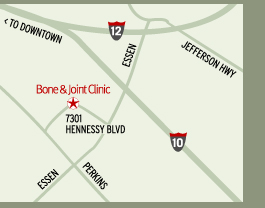

|
Treated by Experts. Treated like Family.
We care about keeping you informed and hope you’ll find
our Doctor’s Orders e-newsletter filled with helpful
information, health tips and interesting updates from our Bone and Joint family. |
|
|
|
Featured Articles |
|
Did You Know:
Advances in Minimally-Invasive Spine Procedures
The use of arthroscopy has changed the field
of orthopaedic surgery forever. Surgery that was once done through large open incisions is now done commonly through small poke incisions with the use of a video scope. This is now the gold standard in most knee and shoulder surgeries. As a result, patients enjoy outpatient surgery with less postoperative pain and a faster return to function.
Endoscopic surgical techniques have
recently been developed for the treatment of spinal related problems. Dr. Kevin
McCarthy of the Spine Center at the Bone and Joint Clinic has trained extensively
in these procedures. He has spent time visiting surgeons in Germany and regions
of the US learning and perfecting these techniques. Dr. McCarthy now uses these procedures commonly in his practice to treat spinal pain.
Through the use of endoscopic techniques, procedures that were previously done through open incisions can now be performed through small 6mm poke incisions. Patients with a disc herniation and sciatica can now enjoy immediate relief through endoscopic discectemy.
This is done using customized endoscopic instruments and equipment. These include a special endoscope with a working channel through which special graspers,
burrs, radiofrequency and laser probes can be utilized. These tools are used to decompress the spine, remove disc material and alleviate pressure and irritation on the nerves of the lower back. Other endoscopic procedures that can be performed for low back pain include endoscopic rhizotomy and disc ablation. All of these minimally invasive procedures allow patients to return to function faster and with less pain.
Dr. McCarthy currently performs endoscopic spinal surgery on an outpatient basis at the Orthopedic Surgery Center at the Bone and Joint Clinic of Baton Rouge.
Sporting Goods:
Soccer foot & ankle injury prevention
— by Patrick B. Hall, D.P.M.
Soccer is the most played sport in the world. As a collision sport, soccer lends itself to injuries due to direct impact, sudden changes in direction, and multiple competitors going for the same ball. Other causes of injury in soccer are overtraining/ inadequate rest, unsupportive shoe gear and poor fitness. Injuries to the foot and ankle comprise 60% of soccer-related injuries. Some injuries are unavoidable but a number of these can be prevented with a few basic measures. The most common foot / ankle injuries and their treatments include:
- Plantar fasciitis: This is the most common cause of foot pain in athletes and is simply an increase in inflammation of a tendon on the bottom of the foot, due to a lack of arch support. It is characterized by pain at the direct bottom of the heel bone. It is usually worst with first step out of bed in the morning and eases with activity. It generally recurs as the day progresses. The most basic way to treat this condition is an increase in arch support with a firm, somewhat stiff, over-the-counter insert and calf muscle stretching before and after physical activity. The best such insert is the PowerStep and is available at Varsity Sports on Perkins Road in Baton Rouge.
- Growth plate injury: Another common cause of heel pain Calcaneal Apophysitis. This is pain in the back of the heel and can be diagnosed by squeezing the back of the heel bone from side-to-side. The pain is usually its worst during or immediately after activity. This condition occurs for two (2) reasons: the impact from repetitive pressure and rapid growth of the leg putting extra stress on the growth plate on the back of the heel. This condition also responds to frequent calf muscle stretching, up to 3 times a day. But in contrast to plantar fasciitis, apophysitis responds better to a softer, gel-style heel cushion. These are available at most drug stores and running stores.
- Shin splints: The primary symptom with this condition is pain at the midpoint of the shin that worsens with activity. This is a two-part injury: an over-use injury and a muscle imbalance. Any activity that has running as a component of competition, disposes a participant to this injury. Year round running with inadequate rest and time for recovery create excessive pressure on the developing bones in the lower leg, creating this painful condition. Additionally, running readily builds calf muscles while the development of the muscles on the front of the shins lags behind. This creates a muscle imbalance putting strain on the front of the leg. An easy way to build up the front (or anterior) muscle group is to walk about the room on your heels with the toes extended upwards and the ball of the foot off of the ground. Doing 3 or 4 sets of 30-seconds of uninterrupted walking in this fashion can help prevent this condition by better balancing the muscles in the lower leg.
- Sprains and strains: A variety of twisting and tweaking injuries occur when the ankle or foot rolls excessively creating pain and swelling. The basic tenets of RIICE (Rest, Ice, Immobilization, Compression and Elevation) are reliable first-line treatments for these injuries. Rest for 48 to 72 to hours from recreational activity can be significant in allowing the injured limb to recover. Immobilization with appropriate splinting or bracing aids resting an injured limb, particularly when it is a weightbearing limb such as the foot and ankle. Ice (never directly on the skin) for 20 minutes on/ 30 minutes off for the first 2-3 days following an injury helps decrease inflammation. Compression with an ACE bandage and elevation of the injured area above the heart are easy and effective at reducing swelling and aiding repair.
General Tips:
- Light jogging and gentle stretching before recreational activity increases oxygen to muscles, speed of nerve impulses and range of motion helping prevent injury and improve performance.
- Buy sport specific shoe gear from a specialty vendor when possible. Adequate fit and proper condition of athletic foot wear is critical in reducing friction blisters and unnecessary tendonitis condition that can adversely affect performance.
- When in doubt, rest. Ignore the adage "play through the pain" and allow proper rest for healing and gradual, improved conditioning.
- Without a doubt, the most common cause for visits to my office among young athletes is lack of arch support. The easiest way to increase support is purchasing a well-fitted, firm insert such as the PowerStep that can be found at Varsity Sports.
- If pain persists, if the injured participant has excessive swelling or bruising, if he or she cannot bear weight on the injured limb, then one should seek medical attention.
Dr. Patrick Hall is Board Certified in Foot Surgery and practices at The Bone and Joint Clinic of Baton Rouge.
On Call:
Meet Sean McDaniel, ATC, LAT
| |
Sean McDaniel
| |
|
Certified National Athletic Trainer
Licensed Athletic Trainer
Sean McDaniel earned a Bachelor of Science in Athletic Training from Southeastern Louisiana University. He teaches Sports Medicine at St. Joseph's Academy and is assistant medical director for the Baton Rouge Soccer Association. Before joining our team, he worked for PEAK Performance Physical Therapy and as an athletic trainer for Capital Semi Pro Soccer team.
In Season:
Cold weather sports and exercise tips to follow
Some like to stay inside during the winter, while others like to get outside in the cold. Whether it's for exercise or for sports, here is a collection of great tips to follow from the American Acedemy of Orthopedic Surgeons. Following these will help keep your muscles and joints healthy all season.
- Cold muscles, tendons and ligaments are more susceptible to injury. To avoid this, do some light exercises for at least 3 to 5 minutes, then slowly and gently stretch the muscles to be exercised, holding each stretch for at least 30 seconds.
- Eventhough it's cold, take frequent water breaks to prevent dehydration and Heat Exhaustion. If you feel dizzy with nausea or a headache, slowly drink some water and seek medical attension.
- For warmth and protection, wear several layers of light, loose and water/wind-resistant clothing. Layering allows you add and remove clothing to accommodate your body’s constantly changing temperature when outside or in a cold environment such as an indoor ice rink.
- Wear proper footwear that provides warmth and dryness, as well as ample ankle support.
Source: American Acedmy of Orthopedic Surgery. http://www6.aaos.org/news/pemr/releases/release.cfm?releasenum=851
|
|
|
|
|
» Eleven Orthopedic Surgeons.
» Two Podiatric Surgeons.
» One Physical Medicine & Rehabilitation Physician.
» Appointments in Days, Not Weeks!
In one convenient location, you'll find the orthopedic clinic you've trusted for over 60 years in a state-of-the-art facility
that includes on-site diagnostics, outpatient surgery, and full rehabilitation services. |
|
|
|
|  |
We are located in the Orthopedic Center at:
7301 Hennessy Blvd., Suite 200
Baton Rouge, LA 70808
For FAQ's, easy driving directions,
physician info & more, visit our website:
|
|
|
|